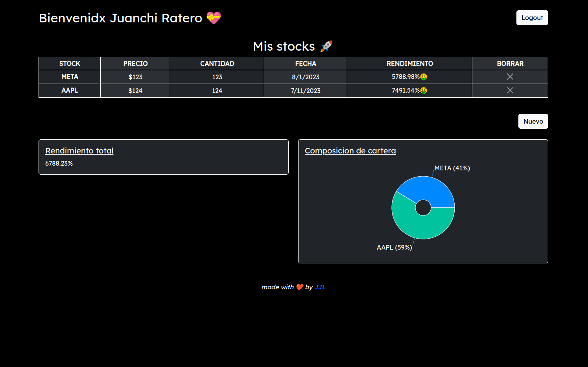

About Me
Hello there, I’m Juan, an electronic engineer from Argentina 🇦🇷
I’m currently learning and implementing some computer vision strategies for detecting solar panels with Intel RealSense 3D cameras.
Concurrently, I'm also learning web development (MERN stack) focusing on applications with financial APIs to develop an application that helps Argentine investors know their real yield in US dollars.
📫 How to reach me: just email me at juanjofrelopez@gmail.com
Personal Projects
Trackealo
Optimus Vision
Simple MIDI to DAC
*explain* *yt video link* Developed a web application that allows Argentinean investors to monitor the actual performance of their portfolios in USD dollars. Utilized the MERN stack, complemented by Bootstrap and Recharts, to create an engaging and user-friendly UI. Integrated a Google Sign-in button for a smoother user experience. Employed two AWS Lambda serverless functions to deploy a personalized ”market price” API, providing up-to-date closing prices for all stocks at market close.
*rviz gif*Content project 2
Content project 3 little fun project
Experience
- Experience 1
- Experience 2
Content experience 1
Content experience 2
Learning Adventures
- Electronics Engineering (2017 - 2023)
- FCE, Cambridge University (2019)
Universidad Nacional de San Juan, Argentina
GPA: 8/10
Overall Score: 175, CEFR level: B2